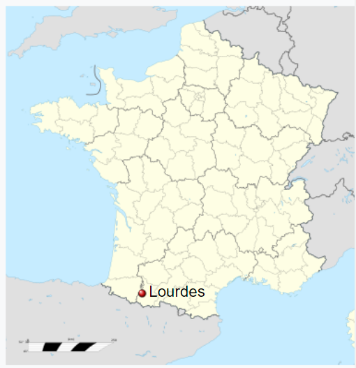
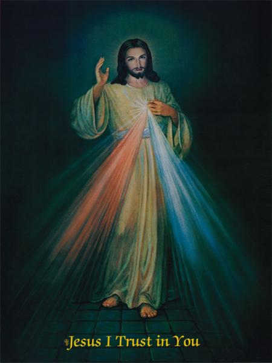
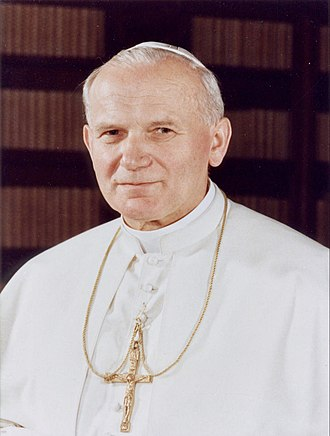

Devotion
St Paul

From the years 732 to 778: Lourdes was possessed by Muslims of Al-Andalus.[7] However, during the 8th century, Lourdes and its fortress became the focus of skirmishes between Mirat, the Muslim local leader, and Charlemagne, King of the Franks. Charlemagne had been laying siege to Mirat in the fortress for some time, but the Moor had so far refused to surrender. According to legend, an eagle unexpectedly appeared and dropped an enormous trout at the feet of Mirat. It was seen as such a bad omen that Mirat was persuaded to surrender to the Queen of the Sky by the local bishop. He visited the Black Virgin of Puy to offer gifts, so he could make sure this was the best course of action and, astounded by its exceptional beauty, he decided to surrender the fort and converted to Christianity. On the day of his baptism, Mirat took on the name of Lorus, which was given to the town, now known as Lourdes.
11 February 1858: A 14-year-old local girl: Bernadette Soubirous:
claimed a beautiful lady appeared to her in the remote Grotto of Massabielle. This lady later identified herself as the Immaculate Conception and the faithful believed her to be the Blessed Virgin Mary. The lady appeared 18 times, and by 1859 thousands of pilgrims were visiting Lourdes. A statue of Our Lady of Lourdes was erected at the site in 1864.
In 1916:, on three occasions, Lúcia dos Santos and her two cousins, Francisco and Jacinta Marto, began reporting apparitions of an angel in the region of Valinhos.
According to the children, these blessed visitations began on the 13 May 1917 when, while tending their family's sheep in Cova da Iria, they said they witnessed the apparition of what they later wholeheartedly believed was the Virgin Mary, and began doing penance and self-sacrifice to atone for sinners. Many flocked to Fátima and Aljustrel to witness these declared apparitions along with the children, but not before the children were jailed for being politically disruptive.[1]
These visitations culminated on the 13 October 1917 public Miracle of the Sun event, the children imparted that the apparition of Virgin Mary divulged three secrets to the children. Although the Miracle of the Sun marked the children's last claimed apparition, the region of Fátima continued to be a destination for pilgrims.


The canon of the Catholic Church was affirmed by
the Council of Rome (AD 382),
the Synod of Hippo (in AD 393),
the Council of Carthage (AD 397),
the Council of Carthage (AD 419),
the Council of Florence (AD 1431–1449)
and finally, as an article of faith, by the Council of Trent (AD 1545–1563)
establishing the canon consisting of 46 books in the Old Testament and 27 books in the New Testament
for a total of 73 books in the Catholic Bible.
In the beginning God created heaven, and earth.
3 Speak ye to the whole assembly of the children of Israel, and say to them: On the tenth day of this month let every man take a lamb by their families and houses.
4 But if the number be less than may suffice to eat the lamb, he shall take unto him his neighbour that joineth to his house, according to the number of souls which may be enough to eat the lamb.
5 And it shall be a lamb without blemish, a male, of one year: according to which rite also you shall take a kid.
6 And you shall keep it until the fourteenth day of this month: and the whole multitude of the children of Israel shall sacrifice it in the evening.
7 And they shall take of the blood thereof, and put it upon both the side posts, and on the upper door posts of the houses, wherein they shall eat it.
8 And they shall eat the flesh that night roasted at the fire, and unleavened bread with wild lettuce.
9 You shall not eat thereof any thing raw, nor boiled in water, but only roasted at the fire: you shall eat the head with the feet and entrails thereof.
10 Neither shall there remain any thing of it until morning. If there be any thing left, you shall burn it with fire.
11 And thus you shall eat it: you shall gird your reins, and you shall have shoes on your feet, holding staves in your hands, and you shall eat in haste: for it is the Phase (that is the Passage) of the Lord.
12 And I will pass through the land of Egypt that night, and will kill every firstborn in the land of Egypt both man and beast: and against all the gods of Egypt I will execute judgments: I am the Lord.
13 And the blood shall be unto you for a sign in the houses where you shall be: and I shall see the blood, and shall pass over you: and the plague shall not be upon you to destroy you, when I shall strike the land of Egypt.
14 And this day shall be for a memorial to you: and you shall keep it a feast to the Lord in your generations with an everlasting observance.
15 Seven days shall you eat unleavened bread: in the first day there shall be no leaven in your houses: whosoever shall eat any thing leavened, from the first day until the seventh day, that soul shall perish out of Israel.
16 The first day shall be holy and solemn, and the seventh day shall be kept with the like solemnity: you shall do no work in them, except those things that belong to eating.
17 And you shall observe the feast of the unleavened bread: for in this same day I will bring forth your army out of the land of Egypt, and you shall keep this day in your generations by a perpetual observance.
18 The first month, the fourteenth day of the month in the evening, you shall eat unleavened bread, until the one and twentieth day of the same month in the evening.
19 Seven days there shall not be found any leaven in your houses: he that shall eat leavened bread, his soul shall perish out of the assembly of Israel, whether he be a stranger or born in the land.